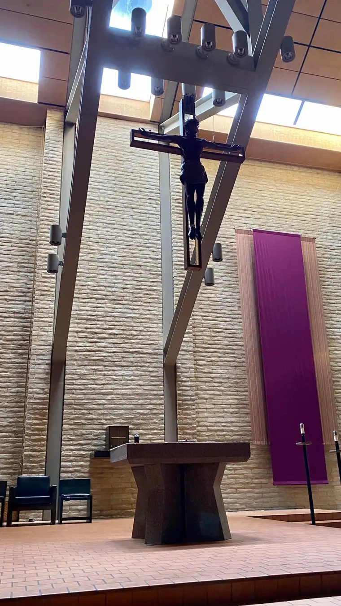

Evil has come to us. It was already here, of course, but now, it is engulfing us, encircling from every direction, permeating every corner of our globe.
This is unlike anything we could have imagined as 2019 turned into a new year. 2020, what a nice, even, hopeful number. And yet, 2020 has not been nice so far, to say the least.
I have tried to be one of many voices bringing hope. But in this quest, I can’t be negligent and betray the truth of it.
The truth of it was summed up in my Tweet this morning: “How could any of us have conceived that we would be so swiftly denied the life-giving sacraments? That the dead would die alone, without loved ones near? That the grieving would grieve alone? That we would be afraid to touch one another for fear we could bring death with a touch?”
It is beyond horrifying that we cannot easily reach out in love right now. It is evil at its core. This is not of God.
How do we make our way through this without turning on one another? So far, we are not doing the best job of it, I’m afraid. I have watched formerly agreeing parties begin to rupture recently. It doesn’t help that, more than ever, we need the touch of God, and yet we are mostly being denied these life-giving infusions of grace. So how are we to move in grace to the full?
Yesterday, I had a chance to enter an empty sanctuary for a short while and ponder the penance I’d been given through Confession — a privilege in these times, I know. My spiritual direction appointment had been made well before this pandemic had made its ravaging appearance at our border, and conditions allowed the meeting to happen, and for me to spend time in a nearby church, alone.

It was beautiful to be there, but it was eerie. It felt like Holy Thursday, when we consider the empty tomb. The last three weeks have felt like one long, deafening Holy Thursday.
I don’t have answers for how we will be delivered from this evil, nor how prolonged will be the wrath of this virus. Nor do I have an apt response for those who believe that by staying near my family right now, I am not being courageous or faithful enough. I don’t know how to bring the light I know is needed right now to appease anyone. Few of us can offer anything adequate at the moment, it seems.
But at the very least, I do know who can. God, and God alone; he is the one who will fight the evil that is consuming us at present. Though we are left mostly defenseless, save our devotions and prayers, we must cling to him in earnest, and pray more than ever before. The way God will defeat this is left to be seen. Having understood for a while now that he is a God of surprises, I am certain that however it unfolds, it will be entirely beyond our comprehension, just as this evil was. But we know he will not only fight but beat it. He will not only attempt it, but his victory is guaranteed.
We have been praying for centuries, at his request, that we be delivered from evil — by his hand. Do we really think he is not listening? Do we really believe God has turned on us?
God works in silence, in hidden spaces, and his ways are not ours. As we bumble along, trying to figure out the answer here, he is already moving, carrying out his plan for the salvation of humankind.
It is so hard to grope in the darkness and not know where we are heading. It is, in moments, impossible. But we must keep reaching toward the light and turn to what we hold inside. As one Twitter friend put it, “Especially now, we must become what we have received.” How beautiful, true, and motivating. We have received Jesus all these years, and now it’s time to be what we have been fed.
I do not know the way ahead. I have been condemned in recent days by a few for the path I am choosing day by day, in not demanding more from our priests, not resisting the directives that seem so unfair, even wrong. Who can truly know the mind of God right now and what he would ask of us? It is unclear. But again, he will guide. We must remain open to his promptings, and stay near through our prayer. That is really all we can do.
“O Jesus, I surrender myself — and the world — to you. Take care of everything.”
And Lord, please, deliver us from evil. Amen.
Q4U: How are you depending on the Lord in this time?